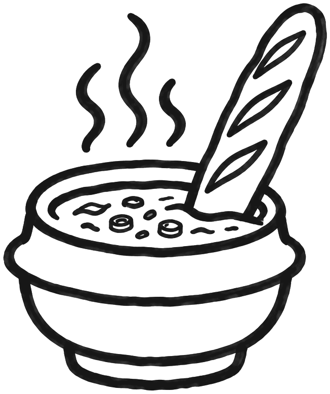

OkdongsikRUE DE LA MICHODIÈRE

Okdongsik 옥동식
Dwaeji gomtang pork soup, suyuk in Paris 2nd · 파리 한식당 · 3 rue de la Michodière
The gomtang I think of on cold days.
My notes on Okdongsik
- When
- Friday lunch, 20 February 2026
- What I ate
- Pork gomtang (Gomtang classique au porc), suyuk (Porc confit, servi froid), Namsan-style donkatsu
Okdongsik: prices, hours, address
- Address
- 3 rue de la Michodière, 75002 Paris
- @okdongsik
- Website
- okdongsik.net/paris
- Pork gomtang
- Gomtang classique au porc. €15, large €17
- Mushroom gomtang
- €16
- Seafood fritters
- €6
- Suyuk
- Porc confit, servi froid. €8
- Mini pork rice bowl
- €8
- Shot of soju
- €4
- Rice pudding with red bean
- €6
- Prices from
- Menu I photographed, 2026-02-20
- Hours
- Mon–Sat 11:30–21:30, Sun 11:30–19:30
- Nearest metro
- Quatre-Septembre (line 3), 110 m, Opéra (line 3·7·8), 220 m
- Eiffel Tower
- 3.2 km in a straight line
- Phone
- 07 53 00 43 82
- Map
- Google Maps
- Sources
- Menu I photographed, 2026-02-20, Hankyung (Korean newspaper), 2026-01-14
- Sources checked